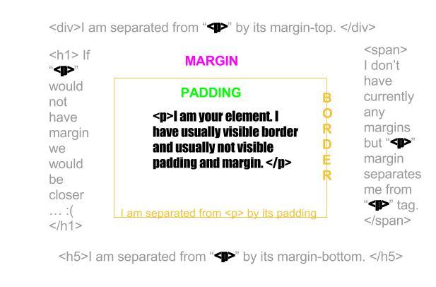

Margins, borders and paddings… how to understand when we can’t see them.
What is the difference between Margin, Border, and Padding?
Hello friends !
Is autumn in Poland and I think it’s a good time to focus on sharpen our CSS skills, since we will spend most of our time at home. Let’s stop wasting time on NETFLIX !
First concepts I would like to touch is PADDING, MARGIN and BORDER. We use those properties when we want to style html tags, like <h1>, <p>, <footer>, <div> or even <body>. For this tutorial let’s assume we want to style <p> tag with a content, for example <p>So awesome !</p>. Keep in mind that for below example I can use any other html tag.
PADDING - is usually not visible space between <p> and border.
BORDER - is usually visible line around our <p> tag content.
MARGIN - is usually not visible space between border and elements next to <p>
Next thing is that you can set BORDER and PADDING in different ways. They both have 4 sites, bottom, top, left and right, for example PADDING-LEFT, MARGIN-BOTTOM etc. You can also set MARGIN to 10px and it will automatically set the margin on every side to 10 px.
You can also set different styling properties to border. You can set it size, style and color in one line worth of style.

What are the best practices associated with using classes vs. ids?
Right now we will talk about CLASSES and why IDS sucks. We use CLASS and ID to set properties in our html tags. Properties like color, margin, text-shadow and 1000 multiply π more. The difference is that you can use ID property with one tag when you can use CLASS with multiple tags. So I personally never use ID because I don't like limiting myself. You will find some situations though when you want to use ID. For example if you work with JavaScript you may use ID for this purpose. Then whenever you see ID in your html element, you know it uses JS.
What are the differences between relative, absolute, fixed, and static positioning?
Damn, that’s the hard one . I will try to make it simple.
ABSOLUTE - absolute is the trickiest position value. absolute behaves like fixed except relative to the nearest positioned ancestor instead of relative to the viewport. If an absolutely-positioned element has no positioned ancestors, it uses the document body, and still moves along with page scrolling. Remember, a "positioned" element is one whose position is anything except static.
RELATIVE - display element as it would be naturally displayed, and if you add any margins, it moves your element with regard to initial displayment. Act the same as static unless you add some properties . Setting the top, right, bottom, and left properties of a relatively-positioned element will cause it to be adjusted away from its normal position. Other content will not be adjusted to fit into any gap left by the element.
FIXED - a fixed element is positioned relative to the viewport, which means it always stays in the same place even if the page is scrolled. As with relative, the top, right, bottom, and left properties are used.
STATIC - is a default value, and it means that element has no position, so the element will responsive to position of other elements.
What does it mean to display inline vs using inline block?
I understand inline as a first dimension and inline-block as 2D. Since you cannot have 2D elements in first dimension, inline property does not work good with block element as <div>. The height and width of the div will be ignored while using display:inline with div. Inline is designed for defoult inline elements as <span>,<em> which mainly exist to style html elements.
Main thing with inline is that it as slows you to display elements next to each other INLINE. Inline block display elements next to each other but they can set width and height of elements.